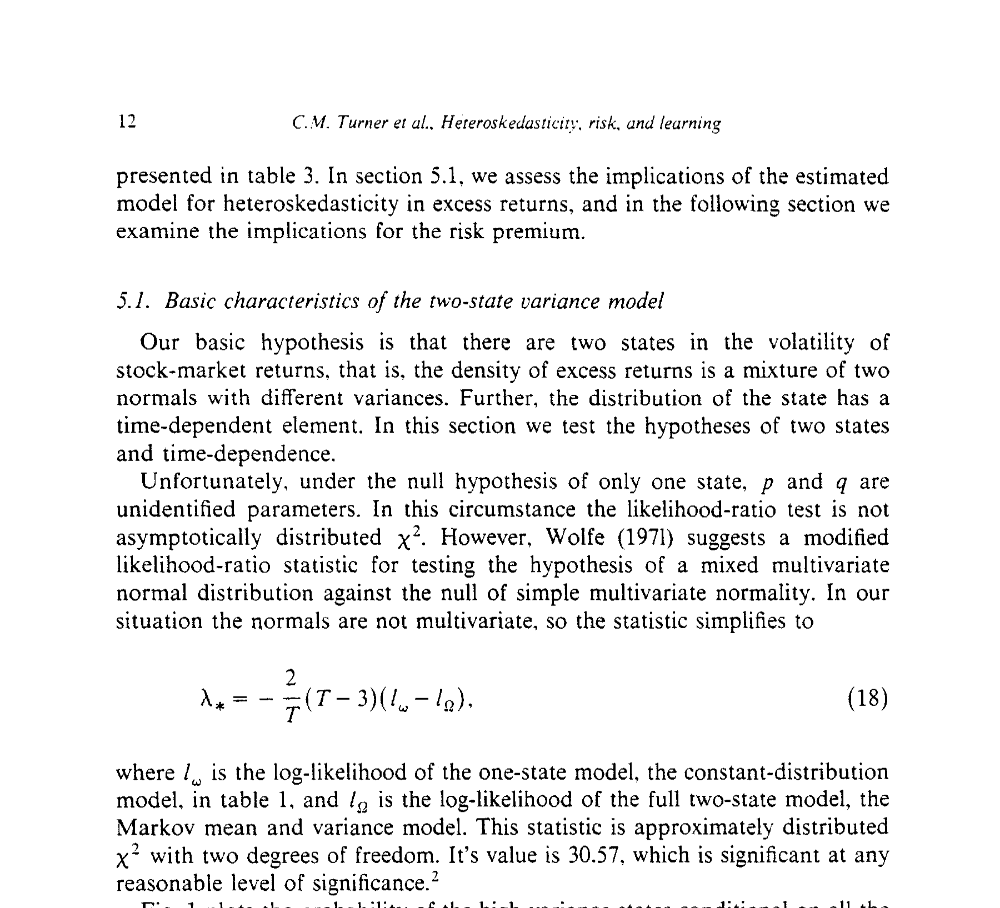
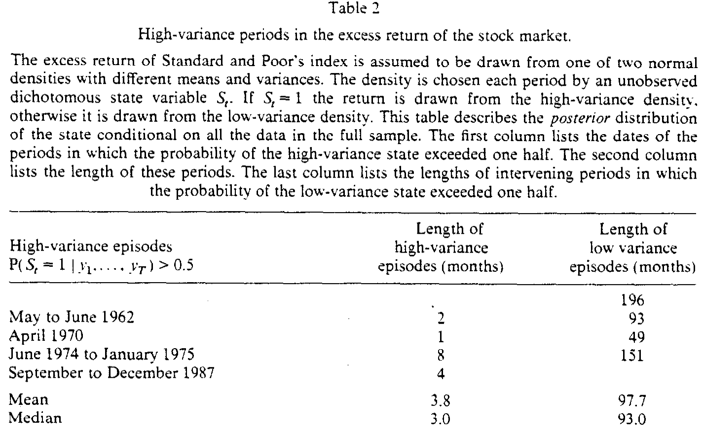
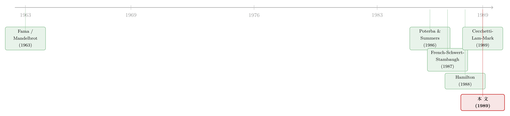

波动来袭，股市为什么不涨反跌？——一锅会「换挡」的混合正态，加上一点学习
本文读的是 Turner, Startz & Nelson (1989, Journal of Financial Economics)：他们把股市超额收益建成「两个状态的混合正态」，状态由一阶马尔可夫过程驱动。当假设投资者「全知」状态时，高方差状态的风险溢价竟估出一个负数；而一旦把「学习」请进来——投资者事前并不知道身处哪个状态、只能用贝叶斯更新去猜——这个反常立刻有了解释：高方差时期总是「出其不意」地到来，于是波动率上升与超额收益之间出现了一个负相关。
1 引言：一个让理论难堪的负号
先抛一个几乎所有学过金融的人都背得出的命题：风险厌恶的投资者要为承担风险索取补偿，风险越大、要求的回报越高。在一个最简单的两资产世界里，一个无风险、一个收益服从正态分布，那么不可分散的风险就是超额收益的方差，风险溢价随方差上升。这是教科书第一章的承诺。
可市场偏偏不肯配合。我们早就知道，股票（或任何一个股指组合）的收益并不服从正态分布——它的经验分布尖峰、厚尾 [Fama (1963)、Mandelbrot (1963)]；我们还知道，方差不仅是会变的，而且是可预测的 [Engle et al. (1987)、Bollerslev et al. (1987)、Schwert (1987, 1988)]。把这两件事放在一起，一个自然的推论是：既然未来的风险可以被预见，风险溢价就该随之起舞。
但真正让人难堪的，是另一个被反复观察到的「事实」：当波动率突然飙升时，市场往往不是涨，而是跌。波动率的变动与超额收益的变动之间，是一个负的相关。这和「风险越大、回报越高」的直觉看上去针锋相对。
这正是困扰资产定价二十多年的「风险—收益符号之谜」：条件均值与条件方差到底是正相关还是负相关，文献里给过两套相反的答案（关于这场拉锯，可参见《收益与风险，到底是「正相关」还是「负相关」？——一道纠缠了二十年的符号谜题》）。
本文的全部精彩，就压在一个核心想法上：这个负号，并不是风险厌恶失灵，而是「学习」的副产品。要把这句话讲清楚，作者先得搭一个能同时产生厚尾、又能产生波动聚集的骨架。
2 两个状态：把「胖尾」拆回一锅混合正态
为什么收益分布会尖峰厚尾？作者给的物理图像极其干净：假设市场在两个状态 (state) 之间切换，每一期由当期状态决定从哪一个正态分布里抽取超额收益。两个状态以方差区分——一个高方差状态 (high-variance state)、一个低方差状态 (low-variance state)。
把这锅「混合 (mixture)」摊开看：样本方差是各期方差的加权平均，必然大于最小方差、小于最大方差。于是低方差那部分观测比「按样本方差画的正态」更尖，高方差那部分则尾巴更肥。两者叠加，整体分布自然就尖峰厚尾——异方差 (heteroskedasticity) 本身就长这副模样。
接着，一个自然的问题是：状态怎么演化？作者借用了 Hamilton (1989) 在另一个语境（GNP 与商业周期）里提出的办法——让状态 \(S_t\) 服从一阶马尔可夫过程 (first-order Markov process)：
$$ P(S_t = 0 \mid S_{t-1} = 0) = q, \qquad P(S_t = 1 \mid S_{t-1} = 0) = 1 - q $$
$$ P(S_t = 1 \mid S_{t-1} = 1) = p, \qquad P(S_t = 0 \mid S_{t-1} = 1) = 1 - p $$
超额收益 \(y_t = q_t - r_t\)（\(q_t\) 是风险资产的毛收益，\(r_t\) 是无风险利率），其条件方差按状态取值：
$$ \sigma_t^2 = (1 - S_t)\,\sigma_0^2 + S_t\,\sigma_1^2, \qquad \sigma_1^2 \ge \sigma_0^2 $$
这一步的妙处在于：和 GARCH 把当期方差写成过去方差的确定性函数不同，这里当期方差是上一期方差的一个随机函数——状态可能续上，也可能切换。换句话说，波动聚集不再是机械的衰减，而是「换挡」的结果（关于把波动聚集还原成投资者行为的另一条思路，可参见《GARCH 从哪儿来？》；把「状态切换」用进国际资产配置的，可参见《分散投资的『退潮时刻』》）。
骨架搭好了。下一步，作者要往里填「人」——而填法不同，结论天差地别。
3 当智能体「全知」：那个为负的高方差溢价
先试最省事的假设：投资者知道马尔可夫过程的实现，也就是说他们清楚每一期自己身处高方差还是低方差状态。这时风险溢价就是当期状态对应正态分布的均值：
$$ y_t = p_0\,(1 - S_t) + p_1\,S_t + \varepsilon_t, \qquad \varepsilon_t \sim N(0, \sigma_t^2) $$
这里 \(p_0\) 是低方差状态的风险溢价，\(p_1\) 是高方差状态的风险溢价。直觉上，既然高方差状态风险更大，理应 \(p_1 \ge p_0 \ge 0\)。
然而估计结果给了一记耳光：\(p_0\) 确实为正，\(p_1\) 却为负。也就是说，在「全知」的设定下，模型告诉你——市场明明知道自己进了高风险状态，却接受了一个更低的回报。这显然违背风险厌恶。作者诚实地把原因归结到设定本身：我们把太多的知识强加给了投资者。真实世界里，没有人在波动来袭的当口就笃定「我现在身处高方差状态」。
于是反转出现了。
4 真正关键的一步：把「学习」请进来
如果投资者并不知道自己身处哪个状态呢？那就得指定他们如何形成预期。作者假设：投资者知道整个结构（转移概率 \(p, q\) 与两个正态的参数），但不知道过去、当下和未来的具体状态。每一期，他们带着一个关于本期状态的先验 (prior) \(P(S_t = i \mid \Psi_{t-1})\) 入场（\(\Psi_{t-1}\) 是 \(t-1\) 期之前的信息集），观测到 \(y_t\) 后用贝叶斯定理 (Bayes' theorem) 把它更新成后验：
$$ P(S_t = i \mid \Psi_t) = \frac{f(\Psi_t \mid S_t = i,\, \Psi_{t-1})\; P(S_t = i \mid \Psi_{t-1})}{f(\Psi_t \mid \Psi_{t-1})} $$
而马尔可夫结构保证了下一期的先验只是本期后验的一个线性变换：
$$ P(S_{t+1} = i \mid \Psi_t) = \sum_{j=0}^{1} P(S_{t+1} = i \mid S_t = j)\; P(S_t = j \mid \Psi_t) $$
由于只有两个状态，整个先验信息可以被一个数概括：高方差状态的先验概率 \(P(S_t = 1 \mid \Psi_{t-1})\)。于是投资者的组合选择被写成这个概率的简单函数（eq. 7 的估计形式）：
$$ y_t = \alpha_0 + \gamma\, P(S_t = 1 \mid \Psi_{t-1}) + \varepsilon_t $$
这里 \(\gamma > 0\) 是关键：当投资者事前就预料到本期更可能落入高方差状态，按标准均值-方差理论，应当被更高的预期收益所补偿。
但还差一块拼图。月度数据里，投资者一个月内会交易很多次，期初的先验会被期内不断到来的成交逐步修正。作者无法把期内后验直接放进 \(y_t\)，于是用状态的真值 \(S_t\) 作为期内后验的代理，得到第三个、也是最完整的设定（eq. 10）：
这条方程把整篇论文的核心一次性讲透了。它说：超额收益里其实藏着两股方向相反的力。
预期的那一半（\(\gamma\)）是正的——这正是教科书承诺的风险补偿。意外的那一半（\(\alpha_1\)）是负的——当高方差状态突然降临、而上一期谁也没料到时，股价必须先跌一跤：只有跌下来，从 \(t\) 到 \(t+1\) 的预期回报才会高于平常，从而补偿股东新承担的风险。这正是 French, Schwert & Stambaugh (1987) 与 Schwert (1989) 的论证逻辑。
于是「波动率上升、收益下跌」的负相关就不再是反常：它来自投资者被高方差状态反复打了个措手不及。整个风险溢价仍然随高方差先验上升——
$$ E(y_t \mid \Psi_{t-1}) = \alpha_0 + (\gamma + \alpha_1)\, P(S_t = 1 \mid \Psi_{t-1}) $$
只要 \(\alpha_0 \ge 0\) 且 \(\gamma + \alpha_1 \ge 0\)，风险溢价就始终为正、且随预期方差递增——风险厌恶完好无损。负号躲在 \(\alpha_1\) 里，是「学习」留下的指纹，而非理论的崩塌。
一句话记住三个参数：\(\gamma\) 是「我早料到了，所以你得多给我」；\(\alpha_1\) 是「我没料到，所以你先得跌给我看」；两者相加，才是市场真正要的那份溢价。
5 估计与结果：43 个月的平静，3 个月的惊涛
模型怎么估？由于状态不可观测，似然函数要用预测误差分解 (forecast error decomposition) 写出，再用 EM 算法迭代求解——本质上是一种迭代再加权最小二乘，每次迭代的权重恰好是「给定全样本时各状态的后验概率」\(P(S_t = i \mid y_1, \dots, y_T)\) [Baum et al. (1970)；Hamilton (1989)]。
数据是 1946 年 1 月到 1987 年 12 月、标普综合指数的月度超额收益（名义总收益减三个月国库券利率，再乘 100），共 504 个观测。结果干净得出乎意料：
- 两个状态确实存在。 用 Wolfe (1971) 修正后的似然比统计量检验「单状态正态」原假设，值为
30.57，在任何常规显著性水平下都被拒绝。 - 高方差状态的方差是低方差状态的四倍多（\(\sigma_1^2 / \sigma_0^2 > 4\)）。检验「两态方差相等」的似然比为
15.04，拒绝。 - 状态有强时间依赖。 二项过程相当于 \(p = 1 - q\)；检验这一约束的 \(t\) 值为
3.51，拒绝——也就是说，当前状态的分布确实依赖于过去的状态。 - 两态的持续性极不对称。 一旦进入高方差状态，中位持续时间约
3个月；而低方差状态的中位持续时间约43个月。 - 高方差状态是稀客。 转移概率推出的平稳概率为低方差
0.9290、高方差0.0710——任一样本里只有约7%的观测落在高方差状态；高方差参数的「有效样本量」（权重之和）仅约33，所以这些参数估得并不精确，标准误偏大。
把全样本后验概率 \(P(S_t = 1 \mid y_1, \dots, y_T)\) 画出来，就是论文的图 1。它本身就是一张「混合假设」的视觉检验：若真是单一正态，这条曲线该平躺在 0.5 附近、表示对状态长期拿不准；可实际上，全样本后验落在 0.20–0.80 之间的时期只占 7%——绝大多数时候，市场对自己身处哪个状态相当笃定。

Figure 1: plots the probability of the high-variance states conditional on all the
而哪些时期被判为高方差？表 2 把它们一一点名：1962 年 5–6 月（2 个月）、1970 年 4 月（1 个月）、1974 年 6 月至 1975 年 1 月（8 个月）、1987 年 9–12 月（4 个月，正是黑色星期一所在）。高方差插曲的平均时长 3.8 个月、中位 3.0 个月，而其间的低方差插曲平均长达 97.7 个月。

Table 2
值得一提的一处张力：检验「两态均值相等 \(\mu_1 = \mu_0\)」时，似然比统计量为 2.66（5% 水平不显著），\(t\) 统计量却高达 5.29（显著）——两种检验给出相反结论。作者据此提醒：高方差状态样本太少，关于它的一切推断都要小心。
6 文献脉络
把这篇论文放回它的时代，脉络相当清晰。
最早，是 Fama (1963) 与 Mandelbrot (1963) 把「收益非正态、尖峰厚尾」钉成了基本事实。接着，一批工作证明波动率不仅异质、而且可预测：Poterba & Summers (1986) 讨论波动率的持续性，Engle et al. (1987) 的 ARCH-M 与 Bollerslev et al. (1987) 的时变协方差 CAPM 把「可预测的方差」搬进了风险溢价，Schwert (1987, 1988) 则从多个角度追问「股市波动率为什么会随时间变化」。

然后，方法论上的关键一跃来自 Hamilton (1988, 1989)：用马尔可夫过程刻画 GNP 等非平稳序列中偶发的「换挡」。Cecchetti, Lam & Mark (1988, 1989) 同样把 Hamilton 的两态马尔可夫用到股票收益上，但他们盯的是真实收益均值的回归；Schwert (1988) 则用它研究名义收益的不稳定。本文所处的位置，恰是这两条线的交汇点：它把 Hamilton 式的马尔可夫切换用在方差（而非均值）上，再叠加贝叶斯学习，从而把「波动—收益负相关」与风险厌恶调和到一起——这一调和的经济直觉，正承接自 French, Schwert & Stambaugh (1987) 与 Schwert (1989)。
评论与延伸（Q&A + 研究方向）
(a) 几个可能的疑问
Q：这和 GARCH 到底差在哪？
GARCH 把当期方差写成过去方差与过去残差平方的确定性函数，波动率是平滑衰减的；本文的方差只取两个离散值，由一个随机的马尔可夫状态决定，是「换挡」而非「衰减」。前者擅长刻画连续的波动聚集，后者擅长刻画离散的「平静期 vs 危机期」切换，并能直接产出尖峰厚尾的混合分布。
Q：「全知模型」估出负的 \(p_1\)，是不是模型错了？
与其说错，不如说它是一个有用的反证。作者正是用这个反常说明：把状态当成可观测、强加给投资者「全知」，会逼出违背风险厌恶的结论。这反过来论证了「学习」设定的必要性——负号该归给 \(\alpha_1\)（意外），而不是 \(p_1\)（已知风险的溢价）。
Q：负的波动—收益相关，本文的解释和「杠杆效应」有何不同？
杠杆效应说的是「价格先跌、负债率被动上升、于是波动随后变大」，因果是「收益 → 波动」。本文的机制相反：高方差状态意外到来，价格为补偿新风险而当期下跌，因果是「波动的意外 → 收益」。两者都能产生负相关，但传导方向不同（关于非对称波动率的另一种建模，可参见《没有消息，就是好消息》）。
Q：只有约 7% 的观测落在高方差状态，结论可信吗？
这正是本文最诚实也最脆弱的地方。高方差参数的有效样本量仅约 33，标准误偏大；均值相等检验里似然比与 \(t\) 值还打了架。涉及高方差状态的具体数值（尤其 \(\alpha_1\) 的精度）应保守看待，但「两态存在」「方差差四倍」「时间依赖」这些结论由全样本支撑，相当稳。
Q：投资者只看「过去的超额收益」来更新信念，这个信息集是不是太窄了？
作者自己承认这是为了方便（\(\Psi_t = (y_1, \dots, y_t)\)），并提到正在准备一个让投资者使用更多变量形成先验的扩展。现实中投资者显然会看更多信息，因此本文估出的「先验概率」更像一个下界式的代理。
Q：1987 年 10 月的崩盘对结果影响有多大？
不小。作者特别注明，「马尔可夫均值模型」的参数估计在很大程度上依赖 1987 年 10 月的崩盘。这提示我们：少数极端事件可能主导对高方差状态的识别，稳健性需要剔除危机样本再看一遍。
(b) 几个可能的研究问题与提案
1. 把马尔可夫切换方差搬到公司债市场
【经济故事】公司债收益的厚尾与「平静—恐慌」切换比股票更剧烈，信用利差里那块「流动性溢价」在危机中会突然放大。一个两态（甚至三态）马尔可夫方差模型，或许能把「投资者被信用恐慌打措手不及」量化出来。 【可行性】中。数据用 TRACE 成交与公司债指数收益可得；识别上需注意公司债的非同步交易与陈旧报价会污染方差估计，得先做流动性调整。
2. 外资持有人是「学习」更慢的那一群吗？
【经济故事】若高方差状态的负收益来自「意外」，那么对本地状态了解更少的外资，先验更新应当更滞后，被高方差打措手不及的程度更深。可检验外资持股高的市场/个股，是否表现出更强的波动—收益负相关。 【可行性】中。需要分国别/分投资者类型的持仓与高频收益数据（如新兴市场「可投资度」分组）；识别难点是把「信息劣势」与「风险偏好差异」分开。
3. 用期权隐含信息校准「先验概率」
【经济故事】本文的 \(P(S_t=1\mid\Psi_{t-1})\) 是从历史收益反推的潜变量。期权市场（隐含波动率、隐含偏度）恰好包含投资者事前对高方差的定价。把隐含信息当作先验的外生代理，可直接检验 \(\gamma\)（预期）与 \(\alpha_1\)（意外）的分解是否成立。 【可行性】高。VIX/隐含波动率曲面数据成熟；识别上只需把「事前隐含方差」与「事后实现方差」对齐，残差即「意外」。
4. 重估稳健性：剔除 1987 后两态结构还在吗？
【经济故事】既然作者承认部分结果依赖 1987 崩盘，一个直接而有价值的练习是滚动窗口重估，看高方差状态的识别、方差比与时间依赖是否对单一危机稳健。 【可行性】高。纯复现性工作，数据与方法本文已备齐，唯一成本是 EM 在不同窗口的收敛与初值敏感性。
我的判断：这篇论文的真正贡献，不在于又造了一个波动率模型，而在于它用最朴素的「两态混合 + 贝叶斯学习」，把「波动率上升、收益下跌」这个长期让风险厌恶难堪的负号，拆成了一正一负两股力，并指出负号属于「意外」、与风险厌恶并不矛盾。这是一种把经济故事写进计量设定的范例。对识别的担忧也很明确：高方差状态太稀（有效样本约 33）、关键结果对 1987 崩盘敏感、投资者信息集被刻意压窄到只有历史收益——这些都让涉及 \(\alpha_1\) 的具体数值更像方向性证据而非精确估计。我接下来最想看到的，是用期权隐含信息为「先验概率」提供一个外生锚，把 \(\gamma\) 与 \(\alpha_1\) 的分解从「潜变量自我拟合」推进到「可证伪」。
参考文献
Baum, L. E., Petrie, T., Soules, G., & Weiss, N. (1970). A maximization technique occurring in the statistical analysis of probabilistic functions of Markov chains. Annals of Mathematical Statistics 41, 164–171.
Bollerslev, T., Engle, R. F., & Wooldridge, J. M. (1987). A capital asset pricing model with time-varying covariances. Journal of Political Economy 96, 116–131.
Cecchetti, S. G., Lam, P., & Mark, N. C. (1988). Mean reversion in equilibrium asset prices. Unpublished manuscript, Ohio State University.
Engle, R. F., Lilien, D. M., & Robins, R. P. (1987). Estimating time varying risk premia in the term structure: The ARCH-M model. Econometrica 55, 391–407.
Fama, E. F. (1963). Mandelbrot and the stable Paretian hypothesis. Journal of Business 36, 420–429.
French, K. R., Schwert, G. W., & Stambaugh, R. F. (1987). Expected stock returns and volatility. Journal of Financial Economics 19, 3–29.
Hamilton, J. D. (1989). A new approach to the economic analysis of nonstationary time series and the business cycle. Econometrica 57, 357–384.
Mandelbrot, B. (1963). The variation of certain speculative prices. Journal of Business 36, 394–419.
Pagan, A. R., & Schwert, G. W. (1989). Alternative models for conditional stock market volatility. Unpublished manuscript, University of Rochester.
Poterba, J. M., & Summers, L. H. (1986). The persistence of volatility and stock market fluctuations. American Economic Review 76, 1142–1151.
Schwert, G. W. (1989). Why does stock market volatility change over time? Unpublished manuscript, University of Rochester.
Turner, C. M., Startz, R., & Nelson, C. R. (1989). A Markov model of heteroskedasticity, risk, and learning in the stock market. Journal of Financial Economics 25, 3–22.
Wolfe, J. H. (1971). A Monte Carlo study of the sampling distribution of the likelihood ratio for mixtures of multinormal distributions. Technical bulletin STB-72-2, Naval Personnel and Training Research Laboratory.